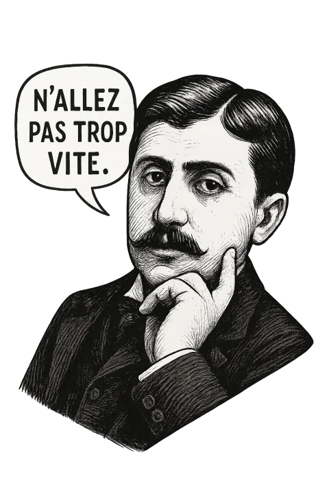
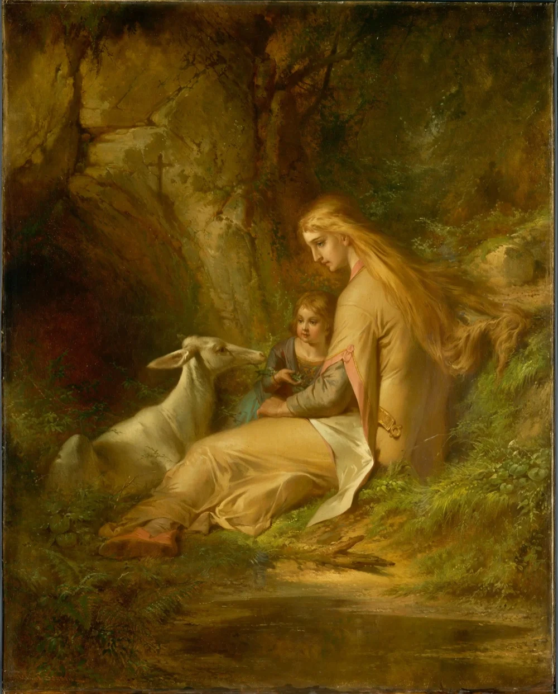

Em busca das
referências perdidas
À la recherche du temps perdu
Essa é uma jornada ilustrada pela obra monumental de Marcel Proust, "Em Busca do Tempo Perdido". Esta experiência imersiva combina as profundas reflexões do autor sobre memória, tempo e natureza humana com recursos visuais para dar vida às suas paisagens literárias.
A edição de referência: Proust, M. (2012). Em busca do tempo perdido vol. 1 - no caminho de Swann. Editora Globo.
Ao percorrer estas referências ilustradas, você encontrará os principais locais, temas e momentos que definem esta obra-prima — desde a infância do narrador em Combray até as revelações do tempo recuperado. Cada seção oferece trechos textuais e os elementos visuais que iluminam a extraordinária visão literária de Proust.
Arraste para tomar o caminho de Proust.

A lanterna mágica
"Ao passo sacudido de seu cavalo, Golo, movido por atroz desígnio, saía da pequena floresta triangular que aveludava de um verde sombrio a vertente de uma colina e avançava aos solavancos para o castelo da pobre Geneviève de Brabant."
Geneviève de Brabant terá um footnote1.

Figura 1: This is my image caption
Notas de Rodapé
: testando footnote.